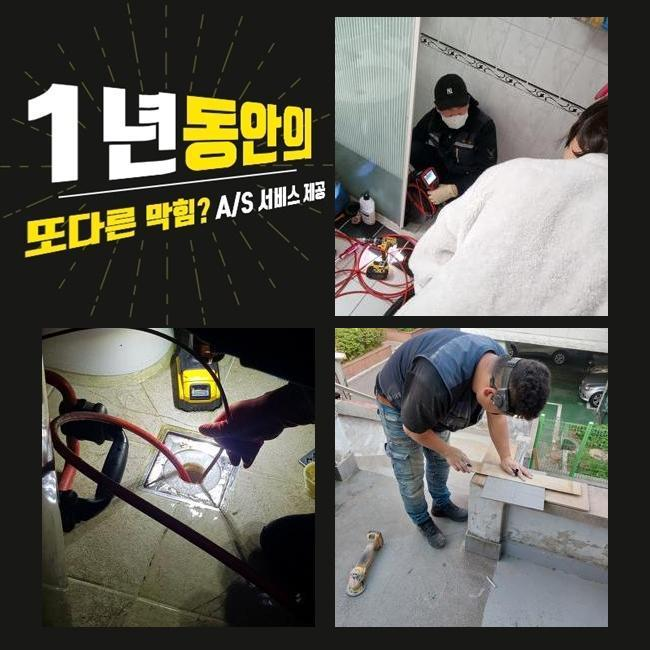
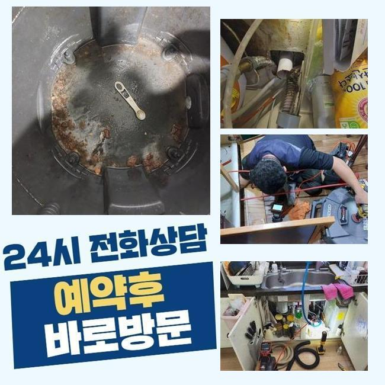
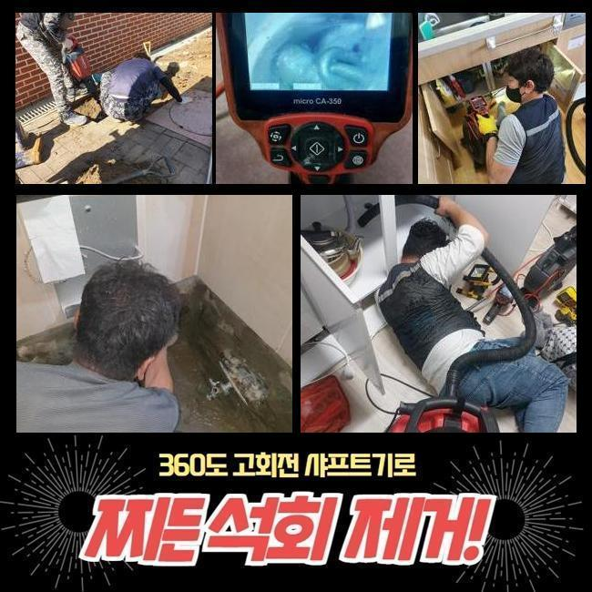
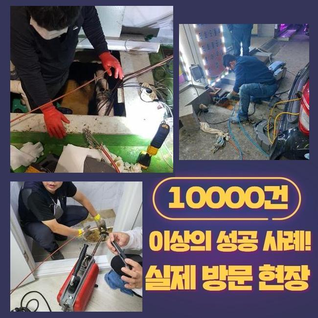
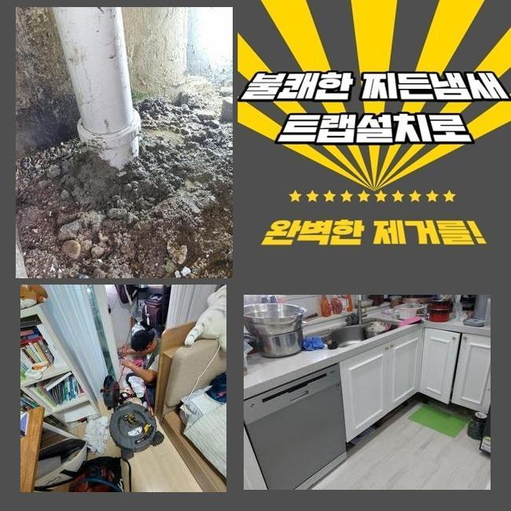
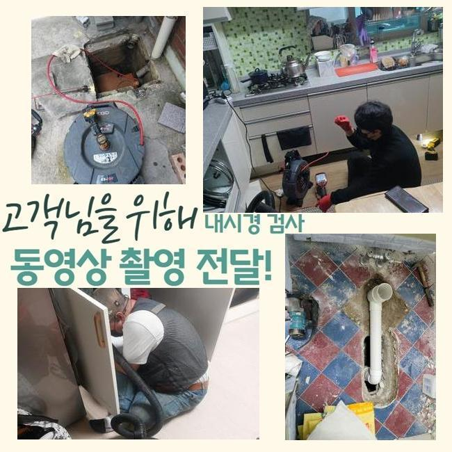

🏠 중랑구 면목동오수관뚫음 면목본동 하수구청소 누수탐지
용인 목동 하수구막힘 전문 시공 후기

📋 작업 개요
- 위치: 용인 목동, 목동, 용인
- 서비스 유형: 하수구막힘, 배관막힘, 누수수리, 뚫는업체, 배관청소, 고압세척, 설비공사, 배관보수
- 작업 일시: 2024. 12. 13. 20:45
- 업체명: 하수구수사대 (010-5615-2118)
🔍 문제 상황
중랑구 면목동오수관뚫음 면목본동 하수구청소 누수탐지
배수 문제들을 시정하기위하여 수행되야하는 절차는 하수라인의 주기적인 관리라고 할 수 있어요
하수관에 이물들이 흐르지못하게 신경써주시고 이를 위하여 노력을 기울이시는것이 1순위입니다
여타 보수공사 작업들을 할 때도 하수구들을 검수하고 오류들을 풀어내는게 1순위입니다
의뢰인의 설명을 듣고 주방라인에서 나타난 기름때문에 막힘 오류들을 시정하려면 팔을 걷어 붙였어요
설거지를 하는 동안 오일류들이 흐르며 관로의 내부에도 자리를 잡게되어 단단해지면서 막힘들이 야기된 상황이었습니다
저희들은 석션으로 초반쪽에 부유물들을 흡입한 후 흡착물들도 제거시키고자 샤프트장비를 써서 배수구를 청소하였습니다
이것으로 잔해물과 악취등의 문제들은 수습했답니다
씽크볼 안에 오수와 잔해들을 제거하고 배수통에서부터 이어진 주름관과 바닥부근을 점검했으나 문제로 보일만한건 없었습니다
이에 따라 깊숙한 지점까지 살피고자 내시경장비를 사용했죠

🔎 원인 분석
💡 전문가 진단: 정밀 진단 장비를 사용하여 슬러지의 고착 여부를 판명하고 타격/세척 작업을 실시했습니다.
내시경기기로 체크해보았더니 입구라인엔 이상징후가 존재하지않았지만 2m 이하 부근 벽면라인에 기름들이 관찰되었어요
지속적으로 확인하니 수직배관 위치에서 하단부를 막고 있는 이물들을 보았죠
슬러지들이 통로를 좁혀 증세들이 생겨난 것으로 생각되었죠
그 후로 이물의 양상에 따른 작업방향을 찾기 시작했어요
잔해물질들이 굳게되어 바닥부근을 막는 문제에서는 샤프트장비를 가용하여 슬러지들을 타격하여 세척을 이행했죠
그리고 4미터 지점들에서는 노커뭉치의 회전력을 운용시켜 고착물들을 조각내어 제거시켰는데요
주변에서 구매할 수 있는 제품과 같이 간단하게 해결하는데 적합한 도구들로는 효과가 미비할 수 밖에 없으므로 전문적인 장치가 수반될 필요가 있는 전 절차를 통하여 이상없이 마무리 되었고 깊은 부분까지 빈틈없이 정리했습니다
이것으로 가지배관들의 신속한 흐름이 이루어져 배수시설들의 기능들을 향상시켰죠
주방쪽의 해당 증상을 얼추 해결하고 외부라인도 관찰하기 시작했어요
외부라인의 하수관에도 대다수의 잔해가 누적된 탓에 작업이 쉽지 않았죠

🔧 작업 과정
일정한 양의 수도를 흐르게하고 배수구를 흡입하고 잔여물들을 석션기로 배출시켰어요
내시경카메라로 각 라인을 확인하니 오염물의 축적이 심각해보였죠
이런 상태는 배수 자체의 유수를 정체시켜 하수관로의 누수문제를 가져올지 모르죠
이것과 같이 누수증세가 나타난다거나 가지배관들이 손상되었을 시에는 교체도 고려해야합니다
의뢰인에게도 통상적인 장치보다는 고압노즐의 운용을 안내했고 이점과 계획들을 설명드리기에 이르렀죠
의뢰인도 관로의 컨디션을 심각한걸로 여기셔서 고압세척을 통하여 문제를 타개하기를 원하셔서 고수압의 방식을 이어나가기로 결정했죠
외부 라인들을 청소하여 이물질을 제거해야만 했는데요
물빠짐이 원활치 못한건 하수도에 증세들이 있을 수 있으므로 진단은 꼭 필요하죠
시공 중간에 발발한 이물의 경우 제거하는 것이 좋고 오염물들이 하수도로 안내려가게 유의하셔야합니다
곧장 고압노즐을 운용시켜 굳게된 석회들과 단단해진 이물들을 제거시켰죠
심각성이 두드러졌던 결함인지라 만만치않은 절차라고 예측했으나 큰 문제없이 수월히 진행하여 작업시간들을 줄일 수 있었습니다
고압수청소들을 완료시키고 재차 내시경장비로 내측의 잔존 오염물들이 있는지 관찰도 빈틈없이 진행시켰죠
배수장애를 피하려면 간헐적이라도 관리들을 해주는것이 좋은데요
추후를 위하여 관리해주시는것에 그리고 신경 써야 합니다
관리에 대한 사항을 준수하면 나중에 하수관의 안정성을 지켜내는게 가능해요
뒤이어 샤프트장치를 쓰고서 흡입한 부유물로부터 위생적이지 못했던 부분들도 정리를하여 끝을 지었죠


✅ 작업 완료
배수관이 막힌 가운데 민간적으로 예방하기 위하여 넷상으로 알아보시는것도 도움됩니다
허나 금일의 증세와 같이 영업장등에서 혼자의 힘으로도 개선이 보이지 않는다면 전문업체를 찾아 상담해볼것을 권해드립니다
배수 정체는 해당 시기에 대응을 미룬다면 또 다른 문제까지 불러일으켜요
이에 따라 안정적이고 효과가 있는 대응이 필요해요
배관에서 정체가 발생되면 전화 주시면 되겠습니다 안정성을 바탕으로 의뢰자의 피해를 잠재우겠습니다




⚠️ 베란다 누수 및 방수 관리 방법
- ✅ 비가 많이 올 때 창틀 주변이나 아래층 천장에 얼룩이 생기는지 정기적으로 확인해 보세요.
- ✅ 우수관 주변 실리콘 마감이 들뜨거나 깨진 틈새가 있는지 손상 여부를 수시로 체크하세요.
- ✅ 베란다 바닥 타일의 줄눈(메지)이 소실되면 그 틈으로 물이 침투하여 누수가 유발됩니다.
- ✅ 누수 의심 증상 발견 시 방치하면 아래층 손실이 커지므로 즉시 전문가의 진단을 받으십시오.
💡 핵심 정리
- 확실한 장비 작업(내시경 점검 및 샤프트 스케일링)으로 원인을 뿌리 뽑습니다.
- 작업 후 1년 이내에 동일한 부위 재발 시 100% 무상 A/S 서비스를 보장합니다.
- 서울 · 경기 · 인천 전 지역에 24시간 언제든 긴급 출동할 수 있도록 항시 대기 중입니다.
❓ 자주 묻는 질문 (FAQ)
🚨 용인 목동 하수구막힘 문제로 고민이신가요?
정확한 원인 진단과 확실한 시공으로 재발 없는 해결을 약속드립니다.
24시간 긴급 출동 | 서울 · 경기 · 인천 전지역 | 1년 내 재발 시 무상 A/S